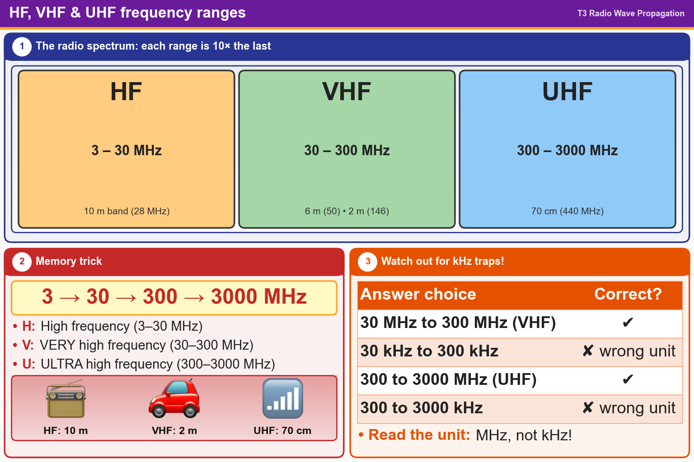

💡 HF 3–30 MHz, VHF 30–300 MHz, UHF 300–3000 MHz. Watch out for kHz trap answers!
Pick an answer for each question, then press Grade at the bottom.
T3B10
What frequency range is referred to as HF?
✘A.300 to 3000 kHz
✘B.30 to 300 MHz
✘C.300 to 3000 MHz
✔D.3 to 30 MHz
T3B08
What frequency range is referred to as VHF?
✘A.300 MHz to 3000 MHz
✘B.300 kHz to 3000 kHz
✘C.30 kHz to 300 kHz
✔D.30 MHz to 300 MHz
T3B09
What frequency range is referred to as UHF?
✔A.300 to 3000 MHz
✘B.30 to 300 MHz
✘C.30 to 300 kHz
✘D.300 to 3000 kHz